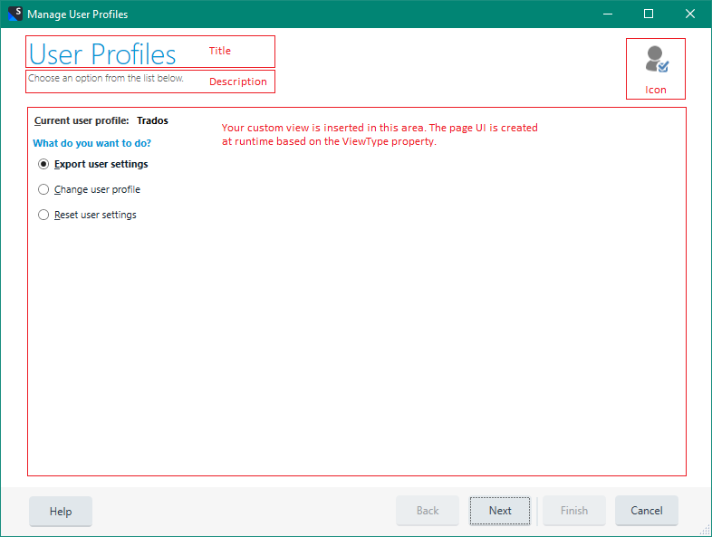

Adding custom steps to wizards
Trados Studio Integration API provides support for third-party developers to add custom pages to certain wizards within the Trados Studio desktop application. You can add custom pages using WPF views and view-models.
For the moment, only the Open Package wizard supports this functionality. Support for other wizards may come in the future.
Creating pages to use as wizard steps
In order to create a view that can be used as a wizard step, a third-party developer needs to:
- Create a WPF view file, e.g.
UserControl, with custom XAML and/or code behind. - Create a ViewModel for the view, if necessary.
- Create a new class representing the custom page.
- This class needs to inherit from the abstract StudioWizardPage.
- Implement the required abstract properties.
StudioWizardPage base class
The StudioWizardPage abstract class comes with a default implementation for some of the methods and properties required to define a custom wizard page. You can further override these methods and properties to provide your own custom logic.

StudioWizardPage properties
Some of the properties are represented on the user interface directly, as shown below: 
ViewType
- Set the
ViewTypeproperty to the actual type of the WPF view file. Trados Studio's infrastructure uses the type to inject the view into the wizard's user interface. You can use thetypeofC# keyword (GetTypein VB) to obtain the view type needed here.
ViewModel
- The wizard infrastructure automatically assigns the
ViewModelas DataContext to the view, so you can useBindingfrom the view to the ViewModel properties. If you don't need a ViewModel just assignnullhere. - For the
ViewModelyou can use any INotifyPropertyChanged implementation suits you best, such as providing your own or using an MVVM framework.
IsAvailable
- This property is used by the wizard framework when navigating to other pages to determine if a page should be displayed.
- When the user clicks Next the wizard checks through the subsequent pages and displays the first one that is available. The Next button is disabled when there are no more pages for which
IsAvailablereturnstrue. - When the user clicks Back the wizard checks through the previous pages and displays the first one that is available. The Back button is disabled when there are no more pages for which
IsAvailablereturnstrue.
Data
- You can define custom data for your pages using the
Dataproperty on the StudioWizardPage object. - The Data property is a
Dictionary<string,object>that is common to all wizard pages. - Once a dictionary key is set from a page, it becomes available to any pages that are displayed after it. This includes pages that are navigated to via the Back button.
- You can use the Page's
OnShowmethod to query for the most recent key values that may have been updated/inserted by previously shown pages. - The
Dataproperty is initialized for all pages before the wizard is displayed.
Icon
- Set this property to display an icon in the top-right area of the page.
- Set this property to
nullif you don't want an icon displayed.
Id
- This property is used by the wizard framework to uniquely identify the pages.
Integrating pages as steps into Trados Studio wizards
Custom pages are injected into the wizard via the firstPages argument of the event object corresponding to the respective wizard. Keep in mind that the firstPages argument is available only for some wizard event objects.
To inject the custom pages as steps into a Trados Studio wizard:
- Determine or define a place in your code to launch the wizard (with custom steps) from; for example, from an Action's
Executemethod. - Determine the appropriate event (e.g. OpenProjectPackageEvent) to be raised, that corresponds to the wizard you want to open.
- Set up a
Listof StudioWizardPage instances, which represent the custom pages you want to insert in the wizard - Create the event, passing in
firstPageslist as an argument. - Use the event aggregator to raise the event. This will launch the wizard.
Notes:
- The custom pages appear in the wizard at the beginning, before any other standard pages.
- The custom pages appear in the wizard in the same order they are defined in the list configured in the event object.
Wizard conceptual execution flow
The diagram below briefly describes the wizard's execution sequence, and shows the order in which StudioWizardPage properties and methods are called by the framework at runtime.

See also: Full sample application with source code (on GitHub).